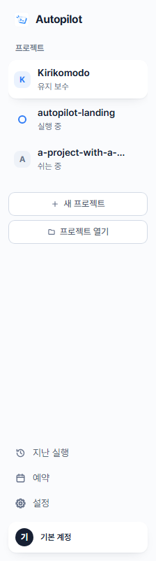
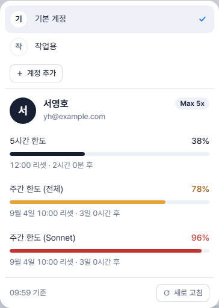

E:\Workspaces\Demo\Kirikomodo
오늘 밤에는 Kirikomodo에 무엇을 해 둘까요?
만들거나 고치고 싶은 것을 적어 주세요
OpusHigh자율개선오전 7:00까지
레일의 구성을 처음부터 다시 짰어요. 계정을 맨 위로 올리고, 아래쪽 세 메뉴를 한 줄 독으로 묶고, 프로필은 "얼마나 썼나"에 더해 "시간에 비해 빠른가"를 보여줘요.
아래 창은 눌러 볼 수 있어요. 레일 경계를 끌면 너비가, 맨 위 계정을 누르면 프로필이 열려요.
E:\Workspaces\Demo\Kirikomodo
오늘 밤에는 Kirikomodo에 무엇을 해 둘까요?
누구로 로그인했고 한도가 얼마 남았는지는 매번 확인하는 정보라 첫 줄에 뒀어요. 아바타 둘레 링이 가장 많이 쓴 한도예요. 프로필 패널도 이 줄 바로 옆에서 열려요.
지난 실행, 예약, 설정이 줄 세 개를 차지하던 자리를 한 줄(54px)로 줄였어요. 프로젝트 목록이 그만큼 길어지고, 너비가 200이어도 글자가 잘리지 않아요.
막대 위 세로 선이 한도 기간이 지난 만큼이에요. 막대가 선을 앞서면 "시간보다 빨리 쓰고 있어요"라고 알려요. 밤새 돌릴 때 중간에 막힐지 가늠하는 데 쓰라고 넣었어요.
왼쪽이 지금 앱이에요(라이트 캡처, 버튼과 너비 조절은 반영된 상태).


끌어서 고를 수 있는 양 끝과 기본, 그리고 960px보다 좁은 창에서 접히는 아이콘 띠예요.
계정이 여럿이면 가로 알약으로 바꾸고, 하나면 "계정 추가"만 남겨 패널이 짧아져요. 로그인 만료 안내는 맨 위에 버튼과 함께 나와요.